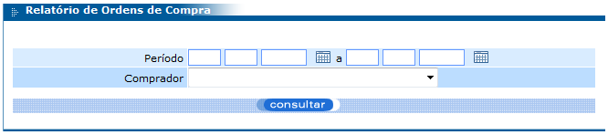

Menu Relatórios
Nesse item do menu é possível visualizar os seguintes relatórios, baseados em seus respectivos filtros:
• Pedidos no período: relatório de pedidos no qual para filtro é obrigado o preenchimento, ao menos, do período.
Filtro:

Relatório:

• Ordens de compra: retorna as ordens de compra efetuadas em determinado período (filtro obrigatório).
Filtro:
Relatório: